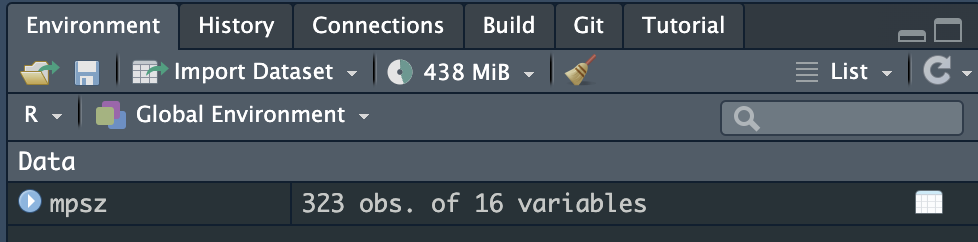

pacman::p_load(sf, tidyverse)Hands-on Exercise 1: Geospatial Data Wrangling with R
Overview
In this hands-on exercise, I learned about the following:
- Public Data Sets like the ones on data.gov.sg, LTADataMall, and InsideAirbnb.
- How to import data sets into RStudio
- Wrangling geospatial data in using different R packages like sf, tidyverse, etc.
Getting Started
Preparing the data sets
First, I downloaded the different data sets from data.gov.sg, LTADataMall, and InsideAirbnb.
Next, I put them under the Hands-on_Ex1 directory, with the following file structure:
Hands-on_Ex1
├── Hands-on_Ex1.qmd
└── data
├── aspatial
│ └── listings.csv
└── geospatial
├── CyclingPathGazette.cpg
├── CyclingPathGazette.dbf
├── CyclingPathGazette.lyr
├── CyclingPathGazette.prj
├── CyclingPathGazette.sbn
├── CyclingPathGazette.sbx
├── CyclingPathGazette.shp
├── CyclingPathGazette.shp.xml
├── CyclingPathGazette.shx
├── MP14_SUBZONE_WEB_PL.dbf
├── MP14_SUBZONE_WEB_PL.prj
├── MP14_SUBZONE_WEB_PL.sbn
├── MP14_SUBZONE_WEB_PL.sbx
├── MP14_SUBZONE_WEB_PL.shp
├── MP14_SUBZONE_WEB_PL.shp.xml
├── MP14_SUBZONE_WEB_PL.shx
└── PreSchoolsLocation.kmlInstalling R packages
I used the code below to install the R packages used in the exercise:
Importing Geospatial Data
After setting up the data sets and the R packages, I proceeded with importing the geospatial data.
Master Plan 2014 Subzone Boundary (Web)
To import the data set to RStudio, I used the following code chunk:
mpsz <- st_read(dsn = "data/geospatial", layer = "MP14_SUBZONE_WEB_PL")Reading layer `MP14_SUBZONE_WEB_PL' from data source
`/Users/kjcpaas/Documents/Grad School/ISSS624/Project/ISSS624/Hands-on_Ex1/data/geospatial'
using driver `ESRI Shapefile'
Simple feature collection with 323 features and 15 fields
Geometry type: MULTIPOLYGON
Dimension: XY
Bounding box: xmin: 2667.538 ymin: 15748.72 xmax: 56396.44 ymax: 50256.33
Projected CRS: SVY21I encountered the error below along the way:
Cannot open layer MasterPlan2014SubzoneBoundaryWebKMLThis is because I originally downloaded the kml file instead of the shp file. After using the shp file, the read worked.
ℹ️ My biggest take away for this is that
st_readreadsshpdata set (by default).
After running the code, I was able to see the mpsz data on my environment.

Others
Changing the website theme
After exploring Quarto docs, I found that we can change the theme. I decided on the zephyr theme as it looks most readable and aesthetic for me.
Issues with using Github on Rstudio
It was recommended to name the project with the convention <github_username>/ISSS624. However, due to restrictions on my machine, I had to deviate from this and create my project elsewhere.
Hence, I couldn’t use usethis::use_github() to setup my Github repository. However, as I use Github intensively in my job, I did the setup manually myself to use the git functions on RStudio.
Create the repo manually on Github on https://github.com/kjcpaas/ISSS624
Add the Github remote on RStudio project
> git remote add origin git@github.com:kjcpaas/ISSS624.git > git remote -v origin git@github.com:kjcpaas/ISSS624.git (fetch) origin git@github.com:kjcpaas/ISSS624.git (push)Set remote for head
> git remote set-head origin --auto > git gc
After all these, I was able to use the git functions on RStudio.